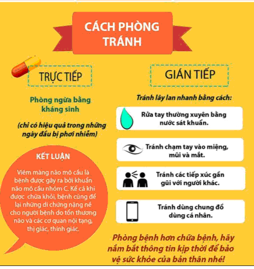

Bài tuyên truyền về bệnh viêm màng não mô cầu và cách phòng bệnh
VỀ BỆNH VIÊM MÀNG NÃO MÔ CẦU VÀ CÁCH PHÒNG BỆNH
Viêm màng não mô cầu là một bệnh nhiễm khuẩn nghiêm trọng, không như bệnh viêm màng não do Vi rút, bệnh viêm màng não có thể lấy đi sinh mạng của trẻ nhỏ đang khỏe mạnh chỉ trong vòng 24 giờ sau những biểu hiện đầu tiên xuất hiện.
Viêm màng não mô cầu khó phát hiện, nhất là trong giai đoạn sớm, tỷ lệ tử vong rất cao, những bệnh nhân sống sót để lại di chứng nặng nề do tổn thương não, tổn thương các cơ quan nội tạng như thận, các giác quan như thị giác, thính giác và ảnh hưởng đến đời sống sinh hoạt, tâm sinh lý người bị bệnh .
* Triệu chứng bệnh viêm màng não mô cầu

- Thực hiện tốt vệ sinh cá nhân: rửa tay thường xuyên bằng xà phòng, súc miệng họng bằng các dung dịch mũi họng thông thường.
- Ăn uống đủ chất dinh dưỡng, luyện tập, nâng cao thể trạng.
- Thực hiện tốt vệ sinh, thông khí nơi ở, nơi làm việc.
- Tiêm vác xin là biện pháp tốt nhất để phòng bệnh viêm màng não Mô Cầu.
- Vắc xin phòng bệnh viêm màng não mô cầu Meningo(A+C) tiêm khi trẻ được 2 tuổi và người lớn sau đó cứ 3 năm tiêm nhắc lại một lần.
Nếu các em chưa được tiêm vắc xin phòng bệnh viêm màng não mô cầu hãy đến các địa điểm tiêm chủng để được Bác sĩ tư vấn và tiêm vắc xin phòng bệnh.
|
| NGƯỜI TUYÊN TRUYỀN
Mai Thị Kim Oanh
|